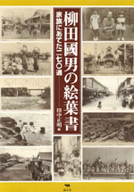
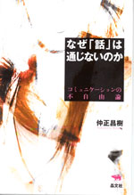
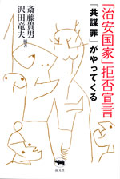
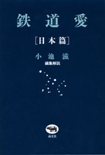
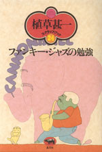
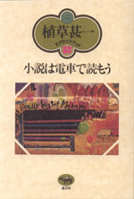
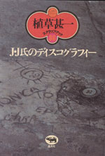
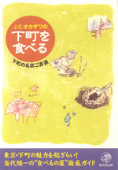
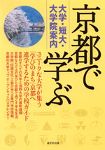

 |
民俗学・国文学 |
| 柳田國男の絵葉書 家族にあてた二七〇通 |
|
| 田中正明編 | |
| B5判 336頁 | |
| 定価5040円（本体4800円） | |
| 4-7949-6654-7 C1095 | |
| 柳田國男が旅先から家族にあてた270通の絵葉書を初公開。柳田が明治37〜昭和26年に国内外で投函した絵葉書には、柳田の知られざる旅や日記的事実、家族への情などが綴られ、新発見に満ちている。国内・中国、欧州、東南アジアの絵葉書の写真は、「柳田の見た風景」であり、既に失われた風物も多い。社会学者、鶴見和子氏の序文、長男夫人富美子氏の証言を付す。 |
 |
思想・エッセイ |
| なぜ「話」は通じないのか コミュニケーションの不自由論 |
|
| 仲正昌樹 | |
| 四六判 256頁 | |
| 定価1680円（本体1600円） | |
| 4-7949-6670-9 C0010 | |
| いま様々な場面で、話が通じなくなっている。人の話をよく聴いたり読んだりしないまま、適当に分かったつもりになって、特定のキーワードにだけパブロフの犬のように反応するお子様な人たち。こうした困った人々の増殖は何を意味するのか。話が通じなくなる構造を哲学・思想的に分析し、真の意味での「対話」の必要性を説く、哲学・思想エッセイ。 |
 |
社会･法律 |
| 「治安国家」拒否宣言 「共謀罪」がやってくる |
|
| 斎藤貴男 ・沢田竜夫 編著 | |
| 四六 判 264頁 | |
| 定価1785円（本体1700円） | |
| 4-7949-6671-7 C0036 | |
| 「共謀罪」というほとんど知られていない法案が国会に上程されようとしている。犯罪行為が実際になくても、相談・話し合っただけで最高懲役５年の罪になるというもの。法案が成立すれば、人々への監視・管理が強化され、密告が奨励されるゆるやかな恐怖社会が到来するだろう──。一線で活躍する弁護士、ジャーナリスト、研究者、社会運動家が問題点を明確にする。 |
| ミステリ | |
| 晶文社ミステリ 大尉のいのしし狩り | |
| デイヴィッド・イーリイ 深町眞理子・ 白須清美 他訳 | |
| 四六判 304頁 | |
| 定価2520円（本体2400円） | |
| 4-7949-2746-0 C0397 | |
| 第二次大戦末期のヨーロッパを背景に、グロテスクな死と暴力のドラマが演じられる「大尉のいのしし狩り」、無人の家に灯る明かりが夫婦を追いつめていくMWA賞候補作「別荘の灯」など、不条理な設定、奇抜なアイデアを、抑制のきいた散文とブラックユーモアで描き出す異色作家イーリイの傑作全15篇。好評を博した『ヨットクラブ』に続く第二弾。 |
 |
日本文学 |
| 鉄道愛［日本篇］ | |
| 編集解説 小池滋 | |
| 四六判 312頁 | |
| 定価1995円（本体1900円） | |
| 4-7949-6672-5 C0093 | |
| 明治の北海道をゆく開拓列車。昭和20年、敗戦の日に走る汽車。この百年の日本人の人生は鉄道とともにあった。鉄道を主題とする名作を選び抜いたアンソロジー。収録作品ー独歩「空知川の岸辺」、花袋「少女病」、荷風「深川の唄」、龍之介「トロッコ」、百 「時は變改す」、阿川弘之「にせ車掌の記」、宮脇俊三「米坂線 109列車」他。 |
| 音楽 | |
| 毎日がワールド・ミュージック（仮） | |
| 北中正和 | |
| A5判 320頁 | |
| 定価2520円（本体2400円） | |
| 4-7949-6675-X C0073 | |
| 日本では90年代に流行し、バブルとともに消費されてしまったワールド・ミュージック。しかしヨーロッパでは、いまだたくさんの音楽が生まれている。多くの移民たちが自分たちのルーツを歌に求め、人の交流が新たな音楽を生むからだ。バルカン、地中海、アフリカ、イスラム、南米……。オールタナティブで、ミクスチャーな音楽の楽しさを60のコラムで紹介。 |
 |
ジャズ |
| 植草甚一スクラップ・ブック 24巻 第10回配本 ファンキー・ジャズの勉強 |
|
| 植草甚一 | |
| 四六判 224頁 | |
| 定価1470円（本体1400円） | |
| 4-7949-2584-0 C0373 | |
| ファンキーづいたファンは黒くなるんだ！ キャノンボール・アドレー、アート・ブレイキー、ホレス・シルヴァーからMJQまで、白人にはないブラックのソウルとフィーリングに満ちあふれたファンキー・ジャズを中心に、J・J氏が熱のこもった口調で語りかける快著。ジャズがもっとよくわかる一冊。（解説・油井正一） |
 |
エッセイ |
| 植草甚一スクラップ・ブック 32巻 第10回配本 小説は電車で読もう |
|
| 植草甚一 | |
| 四六判 240頁 | |
| 定価1470円（本体1400円） | |
| 4-7949-2592-1 C0390 | |
| 中間小説の面白さは、それを読んでいくスピードから生まれてくるのだ。毎月の中間小説雑誌はもちろんのこと、単行本の長編から外国の新しい小説まで、喫茶店や電車の中でも読みまくって、読書のたのしみを思いっきりつめこんだ、J・J氏の新鮮な感覚溢れる連載時評。（解説・筒井康隆） |
 |
ジャズ |
| 植草甚一スクラップ・ブック 36巻 第10回配本 J・J氏のディスコグラフィー |
|
| 植草甚一 | |
| 四六判 240頁 | |
| 定価1470円（本体1400円） | |
| 4-7949-2596-4 C0373 | |
| こんなJAZZのレコードを聴きなおしてみないかい？ モダン・ジャズ入門から新作レコード評まで──ある日ジャズにとりつかれ、またたくまにスーパー・クリティックに変身したJ・J氏が、膨大なコレクションから精選して語りかける、モダン・ジャズへの道案内。（解説・白石かずこ） |
晶文社出版の本 TEL.03-5688-6881 |
 |
レストランガイド | ||||||
| J.C.オカザワの下町を食べる 下町の名店二百選 |
|||||||
| J.C.オカザワ | |||||||
| 四六判 272頁 | |||||||
| 定価1890円（本体1800円） | |||||||
| 4-7949-7629-1 C0076 | |||||||
| 「食べる」シリーズ第4弾は、築地・八丁堀・人形町・浅草など隅田川沿いの下町。選びに選んだ名店二百を紹介。明治・江戸の名残りをとどめる料理店も多く、江戸っ子馴染みの味を本書で味わってほしい。古社寺詣でや名庭園巡りなど下町散策の頼もしい「食ガイド」！ あと一歩の優良店、もれた有名店なども加え計291軒を紹介。2色地図、料理のカラー写真も掲載。 | |||||||

|
学校案内 |
| 京都で学ぶ〜大学･短大・大学院案内 | |
| 晶文社出版編集部編 | |
| A5判 160頁 | |
| 定価1470円（本体1400円） | |
| 4-7949-9281-5 C0037 | |
| ユニークな大学が集う「学びのまち」京都にスポットライトを当てた初めての学校ガイド。京都の全大学・短大の最新情報（特色，学部・学科案内，卒業後の進路，入試の概要，オープンキャンパス情報）を網羅。京都の大学院，伝統工芸など京都らしい学びの可能な専門・各種学校の情報も掲載，京都で過ごす学生生活の魅力を読みやすい記事でおくります。折込地図付。 |
| ケアマネジャー | |
| 直前総仕上げケアマネジャー実戦予想問題'05 | |
| 介護支援研究会編 | |
| B5判 180頁 | |
| 定価2730円（本体2600円） | |
| 4-7949-7634-8C0036 | |
| 10月に実施の介護支援専門員実務研修受講試験に向けて、総仕上げに最適の予想問題集。過去の本試験問題を徹底分析して予想した実戦形式の出題。60問×5回、300問で出題可能性のあるテーマをすべてカバー。Aさん問題と呼ばれる事例問題を強化した。解説・解答集は使いやすい別冊とし、切り取り式の解答用紙や分野別自己診断表など独自の工夫をこらした。 |